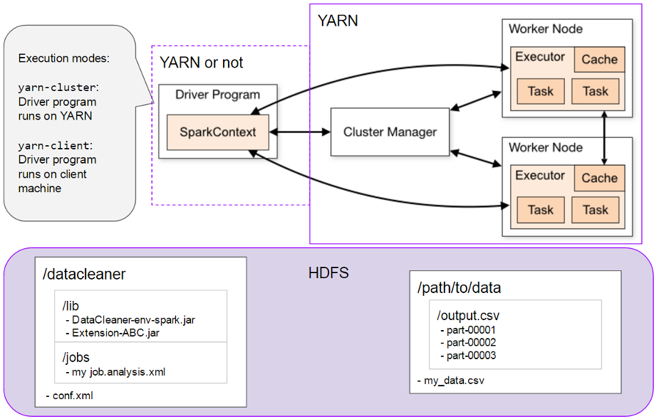

5.2
Copyright © 2008-2017
Table of Contents
- I. Introduction to DataCleaner
- II. Analysis component reference
- III. Reference data
- IV. Configuration reference
- V. Invoking DataCleaner jobs
- VI. Third party integrations
- VII. Developer's guide
List of Tables
Abstract
In this chapter we will try to define how we see the concepts and terms surrounding the environment(s) around DataCleaner.
Although these terms have no strict definitions, you can use this chapter as a guide, at least for the scope of how to use and what to expect from DataCleaner in relation to the described topics.
As a lot of the statements in this chapter are in deed subjective or based upon personal experience, we encourage everyone to provide their feedback and to contribute corrections/improvements to it.
Table of Contents
Data Quality (DQ) is a concept and a business term covering the quality of the data used for a particular purpose. Often times the DQ term is applied to the quality of data used in business decisions but it may also refer to the quality of data used in research, campaigns, processes and more.
Working with Data Quality typically varies a lot from project to project, just as the issues in the quality of data vary a lot. Examples of data quality issues include:
- Completeness of data
- Correctness of data
- Duplication of data
- Uniformedness/standardization of data
A less technical definition of high-quality data is, that data are of high quality "if they are fit for their intended uses in operations, decision making and planning" (J. M. Juran).
Data quality analysis (DQA) is the (human) process of examining the quality of data for a particular process or organization. The DQA includes both technical and non-technical elements. For example, to do a good DQA you will probably need to talk to users, business people, partner organizations and maybe customers. This is needed to asses what the goal of the DQA should be.
From a technical viewpoint the main task in a DQA is the data profiling activity, which will help you discover and measure the current state of affairs in the data.
Data profiling is the activity of investigating a datastore to create a 'profile' of it. With a profile of your datastore you will be a lot better equipped to actually use and improve it.
The way you do profiling often depends on whether you already have some ideas about the quality of the data or if you're not experienced with the datastore at hand. Either way we recommend an explorative approach, because even though you think there are only a certain amount of issues you need to look for, it is our experience (and reasoning behind a lot of the features of DataCleaner) that it is just as important to check those items in the data that you think are correct! Typically it's cheap to include a bit more data into your analysis and the results just might surprise you and save you time!
DataCleaner comprises (amongst other aspects) a desktop application for doing data profiling on just about any kind of datastore.
From Wikipedia, we get a good introductory explanation of the term 'Data wrangling':
Tip
Data munging or data wrangling is loosely the process of manually converting or mapping data from one "raw" form into another format that allows for more convenient consumption of the data with the help of semi-automated tools. This may include further munging, data visualization, data aggregation, training a statistical model, as well as many other potential uses.
As can be seen, it's often important to do changes to data in order to analyze it. That's why DataCleaner bundles a lot of transformational and improvement features which allow the user to not only profile data, but also to reshape it into a form that is fitting.
A datastore is the place where data is stored. Usually enterprise data lives in relational databases, but there are numerous exceptions to that rule.
To comprehend different sources of data, such as databases, spreadsheets, XML files and even standard business applications, we employ the umbrella term datastore . DataCleaner is capable of retrieving data from a very wide range of datastores. And furthermore, DataCleaner can update the data of most of these datastores as well.
A datastore can be created in the UI or via the configuration file . You can create a datastore from any type of source such as: CSV, Excel, Oracle Database, MySQL, etc.

We've argued that data profiling is ideally an explorative activity. Data monitoring typically isn't! The measurements that you do when profiling often times needs to be continuously checked so that your improvements are enforced through time. This is what data monitoring is typically about.
Data monitoring solutions come in different shapes and sizes. You can set up your own bulk of scheduled jobs that run every night. You can build alerts around it that send you emails if a particular measure goes beyond its allowed thresholds, or in some cases you can attempt ruling out the issue entirely by applying First-Time-Right (FTR) principles that validate data at entry-time. eg. at data registration forms and more.
Master data management (MDM) is a very broad term and is seen materialized in a variety of ways. For the scope of this document it serves more as a context of data quality than an activity that we actually target with DataCleaner per-se.
The overall goals of MDM is to manage the important data of an organization. By "master data" we refer to "a single version of the truth", ie. not the data of a particular system, but for example all the customer data or product data of a company. Usually this data is dispersed over multiple datastores, so an important part of MDM is the process of unifying the data into a single model.
Obviously another of the very important issues to handle in MDM is the quality of data. If you simply gather eg. "all customer data" from all systems in an organization, you will most likely see a lot of data quality issues. There will be a lot of duplicate entries, there will be variances in the way that customer data is filled, there will be different identifiers and even different levels of granularity for defining "what is a customer?". In the context of MDM, DataCleaner can serve as the engine to cleanse, transform and unify data from multiple datastores into the single view of the master data.
Table of Contents
These are the system requirements of DataCleaner:
- A computer (with a graphical display, except if run in command-line mode).
- A Java Runtime Environment (JRE), version 7 or higher.
- A DataCleaner software license file for professional editions. If you've requested a free trial or purchased DataCleaner online, this file will have been sent to your email address.
Start the installation procedure using the installer program. The installer program is an executable JAR file, which is executable on most systems if you simply double-click it.
Tip
If the installer does not launch when you double-click it, open a command prompt and enter:
java -jar DataCleaner-[edition]-[version]-install.jar
Troubleshooting
Usually the installation procedure is trivial and self-explanatory. But in case something is not working as expected, please check the following points:
-
On Windows systems, if you do not have Administrative privileges on the machine, we encourage you to install DataCleaner in your user's directory instead of in 'Program Files'.
-
On some Windows systems you can get a warning ' There is no script engine for file extension '.js' '. This happens when .js files (JavaScript) files are associated with an editor instead of Windows' built-in scripting engine. To resolve this issue, please refer to these help links:
-
answers.microsoft.com , which address the issue and recommends...
-
winhelponline.com , which has a fix for the issue
-
-
If you have issues with locating or selecting the software license file, you can skip the step in the installer by copying the license file manually to this folder: '~/.datacleaner' (where ~ is your User's home folder). Note that on Windows machines it is prohibited by Windows explorer to create directories starting with dot (.), but it can be done using the command prompt:
mkdir .datacleaner
-
If you have problems with running out of heap memory, you can adjust the amount of memory allocated in the file 'DataCleaner.l4j', alternatively the file 'DataCleaner-console.l4j' if you are running from console.
In order to increase Java heap memory you can use the following parameters:
-
-Xms- set the minimum heap size -
-Xmx- set the maximum heap size
Eg.
-Xmx4gto set the maximum size of the heap to 4 GB. -
Below is a screenshot of the initial screen that will be presented when launching DataCleaner (desktop community edition). A new datastore can be added in the "New job from scratch" or in "Manage datastores" screens available by clicking the buttons in the bottom of the screen.

File datastores can be added using a drop zone (or browse button) located in the top of the screen. Below, there are buttons that enable adding databases or cloud services.

If the file is added using the drop zone, its format will be inferred. If you need more control over how the file is going to be interpreted, use the alternative way to add a new datastore - "Manage datastores" button in the welcome screen.

The "Datastore management" screen - except from viewing and editing existing datastores - has an option to add a new one based on its type. Choose an icon in the bottom of the screen that suits your datastore type.
Once you've registered ('created') your own datastore, you can select it from the list and (in "New job from scratch" screen) or select it from the list and click "Build job" (in "Datastore Management" screen) to start working with it!
Tip
You can also configure your datastore by means of the configuration file (conf.xml), which has both some pros and some cons. For more information, read the configuration file chapter .
There are a few different kinds of components that you can add to your job:
-
Analyzers , which are the most important components. Actually, without at least one analyzer the job will not run (if you execute the job without adding one, DataCleaner will suggest adding a basic one that will save the output to a file). An analyzer is a component that inspects the data that it receives and generates a result or a report. The majority of the data profiling cruft is created as analyzers.
-
Transformers are components used to modify the data before analyzing it. Sometimes it's neccessary to extract parts of a value or combine two values to correctly get an idea about a particular measure. In other scenarios, transformers can be used to perform reference data lookups or other similar tasks and place the results of an operation into the stream of data in the job.
The result of a transformer is a set of output columns. These columns work exactly like regular columns in your job, except that they have a preceding step in the flow before they become materialized.
-
Filters are components that split the flow of processing in a job. A filter will have a number of possible outcomes and depending on the outcome of a filter, a particular row might be processed by different sub-flows. Filters are often used simply to disregard certain rows from the analysis, eg. null values or values outside the range of interest.
Each of these components will be presented as a node in the job graph. Double-clicking a component (graph node) will bring its configuration dialog.
Transformers and filters are added to your job using the "Transform" and "Improve" menus. The menus are available in component library on the left or by right-clicking on an empty space in the canvas. Please refer to the reference chapter Transformations for more information on specific transformers and filters.
Analyzers are added to your job using the "Analyze" menu (in most cases), but also "Write" menu for analyzers that save output to a datastore. Please refer to the reference chapter Analyzers for more information on specific analyzers.
Simply adding a transformer or filter actually doesn't change your job as such! This is because these components only have an impact if you wire them together.
To wire a transformer you simply need to draw an arrow between the components in the graph. You can start drawing it by right-clicking the first of the components and choosing "Link to..." from the context menu. An alternative way to enter the drawing mode is to select the component and connect the components with Shift button pressed.

To wire a filter you need to set up a dependency on either of it's outcomes. All components have a button for selecting filter outcomes in the top-right corners of their configuration dialogs. Click this button to select a filter outcome to depend on.
If you have multiple filters you can chain these simply by having dependent outcomes of the individual filters. This will require all filter requirements in the chain to be met, for a record to be passed to the component (AND logic).
Chained filters
Using "Link to...", it is also possible to wire several filters to a component in a kind of diamond shape. In that case, if any of the the filter requirements are met, the record will be passed to the component (OR logic).

"Diamond" filters
The "Link to..." option wires components together in the "main flow". However, some components are able to produce additional output data streams. For example, the main feature of a Completeness Analyzer is to produce a summary of records completeness in the job result window. Additionally, it produces two output data streams - "Complete records" and "Incomplete records". Output data streams behave similarly to a source table, although such a table is created dynamically by a component. This enables further processing of such output.
Components producing output data streams have additional "Link to..." position in the right-click menu to wire the output with subsequent components.

Instead of wiring components with "Link to..." menu option, double-clicking a component brings up a configuration dialog that can be used to choose its input columns. In the top-right corner of the dialog, the scope of the component can be chosen. Switching between scopes gives us the possibility to choose input columns from the "main flow" (default scope) or from output data streams.

An example job using output data streams:

Tip
The canvas displays messages (in the bottom of the screen) which contain instructions with the next steps that need to be performed in other to build a valid job.
When a job has been built you can execute it. To check whether your job is correctly configured and ready to execute, check the status bar in the bottom of the job building window.
To execute the job, simply click the "Execute" button in the top-right corner of the window. This will bring up the result window, which contains:
-
The Progress information tab which contains useful information and progress indications while the job is being executed.
-
Additional tabs for each component type that produces a result/report. For instance 'Value distribution' if such a component was added to the job.
Here's an example of an analysis result window:

You can save your jobs in order to reuse them at a later time. Saving a job is simple: just click the "Save" button in the top panel of the window.
Analysis jobs are saved in files with the ".analysis.xml" extension. These files are XML files that are readable and editable using any XML editor.
Opening jobs can be done using the "Open" menu item. Opening a job will restore a job building window from where you can edit and run the job.
DataCleaner contains a feature where you can reuse a job for multiple datastores or just multiple columns in the same datastore. We call this feature 'template jobs'.
When opening a job you are presented with a file chooser. When you select a job file a panel will appear, containing some information about the job as well as available actions:

If you click the 'Open as template' button you will be presented with a dialog where you can map the job's original columns to a new set of columns:

First you need to specify the datastore to use. On the left side you see the name of the original datastore, but the job is not restricted to use only this datastore. Select a datastore from the list and the fields below for the columns will become active.
Then you need to map individual columns. If you have two datastore that have the same column names, you can click the "Map automatically" button and they will be automatically assigned. Otherwise you need to map the columns from the new datastore's available columns.
Finally your job may contain 'Job-level variables'. These are configurable properties of the job that you might also want to fill out.
Once these 2-3 steps have been completed, click the "Open job" button, and DataCleaner will be ready for executing the job on a new set of columns!
Although the primary focus of DataCleaner is analysis, often during such analysis you will find yourself actually improving data by means of applying transformers and filters on it. When this is the case, obviously you will want to export the improved/cleansed data so you can utilize it in other situations than the analysis.
Please refer to the reference chapter Writers for more information on writing cleansed data.
Table of Contents
Abstract
With transformations you can pre- and postprocess your data as part of your DQ project.
Technically speaking there are two kinds of transformations: Transformers and Filters. Transformers are used to extract, generate or refine data (new columns and sometimes also new rows), whereas filters are used to limit or split the dataset into separate processing streams.
There's quite a lot of transformations available in DataCleaner, more than will be feasible to describe all in detail. This chapter provides a documentation for some of the essential ones.
The JavaScript transformer allows the user to define his/her own script which can perform rather intricate things like conditioning, looping. It can also be used as a way to express small business rules.
For this documentation, a complete reference of JavaScript is out of scope. But we will show a few examples and more importantly talk about the available variables and their types.
The JavaScript transformer returns a single string. The entered script should provide this string as the last line of the script. This is why the template script is as follows (so you can just implement the eval() function):
function eval() {
return \"hello \" + values[0];
}
eval();
Variables:
Table 3.1. JavaScript variables
| Variable | Description |
|---|---|
| values |
An array of all values in the row (as mapped by the "Columns" property). Using "values" you can reference eg. the first and third values like this: var first = values[0]; var third = values[2]; Note that JavaScript arrays are 0-based. Instead of indexes you can also reference by column name, like this: var idValue = values["id"]; |
| column_name * |
Any column name that is also a valid JavaScript and not a reserved variable name will also be added directly to the scope of the script as a variable. For example, if you have two columns, FIRST_NAME and LAST_NAME, you can concatenate them easily, like this: var fullname = FIRST_NAME + " " + LAST_NAME; |
| out |
A reference to the system console's "out" stream. If running DataCleaner with the console visible, you can print messages to the console, like this: out.println("Value: " + values[0]);
|
| log |
A reference to the logging subsystem. Logging can be configured and log messages are stored in files, which makes it a bit more flexible than simply using "out". Here's how you write a few log messages with varying severities:
log.debug("This is a DEBUG message, it will probably be disregarded");
log.info("This is a INFO message, it will probably be written to the logs");
log.warn("This is a WARN message, it will most likely be written to the logs");
log.error("This is a ERROR message, it will almost certainly be written to the logs");
|
Data types:
Table 3.2. JavaScript data types
| Data type | Description |
|---|---|
| STRING |
String values are represented as JavaScript strings, which means that they have (among others) methods like: var str = values[0]; // get the length of a string var len = str.length(); // uppercase variant of a string var up = str.toUpperCase(); // lowercase variant of a string var lw = str.toLowerCase(); For more information, we recommend W3 schools JavaScript string reference . |
| NUMBER |
Numbers are treated as regular JavaScript numbers, which means that they have (among others) methods and operators like: var num = values[0]; // format with 2 decimals var formattedNumber = num.toFixed(2); // add, subtract, multiply or divide var m = (4 + num * 2 - 1) / 2; For more information, we recommend W3 schools JavaScript number reference and also check out the Math function reference. |
| DATE |
Date values are treated as Java dates, which is a bit unusual, but leaves you with almost an identical interface as a regular JavaScript date. Here's a summary of typical methods: var d = values[0]; var year = d.getYear(); var month = d.getMonth(); var date = d.getDate(); var hour = d.getHour(); var minutes = d.getMinutes(); var seconds = d.getSeconds(); // milliseconds since 1970-01-01 var timestamp = d.getTime(); For a full reference, please look at the Java Date class reference . |
| BOOLEAN | Boolean (true/false) values are simply booleans, no sugar coating added :) |
With this transformation it is possible to compose a job that embeds functionality from another saved job.
The job that is invoked will be stripped from it's analysis section, which means that only transformations remain. That way you can split up complex transformation flows into smaller pieces - each represented as a job file.
To configure the transformation, select the columns from your current job's source which needs to be piped into the child job. The amount of columns selected needs to be the same as the amount of columns defined in the child job. This will be checked automatically, making it impossible to run the transformation otherwise.
The Equals filter provides a way to make a simple filtering condition based on a white list / valid list of values. Simply enter a list of values that you accept for a given column, and then you can map your flow to the VALID outcome of the filter.
Here's an example of an Equals filter configuration where valid Gender values are being checked.

Use the plus/minus buttons to grow or shrink the list of values you want to accept.
If placed as the first component in a flow, the Equals filter is optimizable in a way where it will modify your originating query. This means that it is also an appropriate filter to use if you just want to sample the data used in your job.
The Max rows filter is used to limit the amount of records that are passed further on in the job's flow.
If placed as the first component in a flow, the Max rows filter is optimizable in a way where it will modify your originating query. This means that it is also an appropriate filter to use if you just want to sample the data used in your job.
The Not null filter is a simple filter that can be used to exclude null values from your flow. Additionally you can select whether or not you want to accept empty strings ("") or not.
If placed as the first component in a flow, the Not null filter is optimizable in a way where it will modify your originating query. This means that it is also an appropriate filter to use if you just want to sample the data used in your job.
The Union transformer allows you to combine multiple streams into one. Providing what is equivalent to a union of tables. Use it to fuse data streams coming from different source tables. You can define new fields whose values represent whatever is available from one of the input streams.
Below is an example of a job with the Union transformation and a composite datastore . The composite datastore contains several data sources, each with customer information. The Union transformer in this example aims to combine tables of these data sources so that a single stream of data can be consumed with records from all the sources.

The configuration of the Union transformation is done by lining up column from the sources that should be combined. In the example shown 'CUSTOMERNUMBER' and 'id' are combined into one new field. Similarly 'CUSTOMERNAME' and 'family_name' is combined and so on.
Table of Contents
The Synonym lookup transformation is a critical part of DataCleaner's ability to standardize and cleanse data. Using this component you can look up values in a synonym catalog and have it replaced with its master term, if it is found to be a synonym.
Below is a screenshot of the synonym lookup's configuration panel:
The configuration of the Synonym lookup is simple:
-
Select the column to apply the lookup function to.
-
Use the 'Retain original value' option to determine if unmatched values (non-synonyms) should be retained or if a null value should be returned if there is no match.
-
Select the synonym catalog to use for lookups.
If your synonym catalog contains all the allowed values for a particula column, it can be a good idea to uncheck the 'Retain original value' checkbox and then do a simple null-check on the resulting output column. If null values are found, it's because there are values in the column that the synonym catalog is not able to standardize.
The table lookup transformer allows you to look up values in a different table. Any amount of columns can be used for mapping (lookup conditioning) and for outputting (the outcome of the lookup).
The configuration screen for the table lookup transformer looks like this:
To make the mapping you need to select the target datastore, schema and table names. Once selected you will be able to select which columns to use for condition setting when looking up values.
The semantics of the Table lookup are close to the semantics of a LEFT JOIN. If no lookup value is found, nulls will be returned. However, if multiple records are found to match the conditions, only the first will be returned.
Note that the Table lookup will use a cache for looking up values, to avoid querying the target table for every incoming value.
Abstract
This chapter deals with one of the most important concepts in DataCleaner: Analysis of data quality.
An analyzer is a component that consumes a (set of) column(s) and generates an analysis result based on the values in the consumed columns.
Here is an example of a configuration panel pertaining to an analyzer:

In the panel there will always be one or more selections of columns. The configuration panel may also contain additional properties for configuration.
Table of Contents
Boolean analyzer is an analyzer targeted at boolean values. For a single boolean column it is quite simple: It will show the distribution of true/false (and optionally null) values in a column. For several columns it will also show the value combinations and the frequencies of the combinations. The combination matrix makes the Boolean analyzer a handy analyzer for use with combinations of matching transformers and other transformers that yield boolean values.
Boolean analyzer has no configuration parameters, except for the input columns.
The completeness analyzer provides a really simple way to check that all required fields in your records have been filled. Think of it like a big "not null" check across multiple fields. In combination with the monitoring application, this analyzer makes it easy to track which records needs additional information.
Here is a screenshot of the configuration panel of the Completeness analyzer:

The configuration properties of the Completeness analyzer are:
Table 5.1. Completeness analyzer properties
| Property | Description |
|---|---|
| Values | Select the columns you want to evaluate with your completeness analyzer. For each selected column you get to choose whether the analyzer should simply do a null-check, or if it should also check for blank values. |
| Evaluation mode | This determines the mode that the completeness check runs in. Here you can configure whether the analyzer should consider records as "incomplete" if any of the selected values are null/blank, or if all the values need to be null/blank before the record is counted as incomplete. |
The Character set distribution analyzer inspects and maps text characters according to character set affinity, such as Latin, Hebrew, Cyrillic, Chinese and more.
Such analysis is convenient for getting insight into the international aspects of your data. Are you able to read and understand all your data? Will it work in your non-internationalized systems?
The Date gap analyzer is used to identify gaps in recorded time series. This analyzer is useful for example if you have employee time registration systems which record FROM and TO dates. It will allow you to identify if there are unexpected gaps in the data.
The Date/time analyzer provides general purpose profiling metrics for temporal column types such as DATE, TIME and TIMESTAMP columns.
The number analyzer provides general purpose profiling metrics for numerical column types.
The pattern finder is one of the more advanced, but also very popular analyzers of DataCleaner.
Here is a screenshot of the configuration panel of the Pattern finder:

From the screenshot we can see that the Pattern finder has these configuration properties:
Table 5.2. Pattern finder properties
| Property | Description |
|---|---|
| Group column | Allows you to define a pattern group column. With a pattern group column you can separate the identified patterns into separate buckets/groups. Imagine for example that you want to check if the phone numbers of your customers are consistent. If you have an international customer based, you should then group by a country column to make sure that phone patterns identified are not matched with phone patterns from different countries. |
| Discriminate text case | Defines whether or not to discriminate (ie. consider as different pattern parts) based on text case. If true "DataCleaner" and "datacleaner" will be considered instances of different patterns, if false they will be matched within same pattern. |
| Discriminate negative numbers | When parsing numbers, this property defines if negative numbers should be discriminated from positive numbers. |
| Discriminate decimals | When parsing numbers, this property defines if decimal numbers should be discriminated from integers. |
| Enable mixed tokens |
Defines whether or not to categorize tokens that contain both letters and digits as "mixed", or alternatively as two separate tokens. Mixed tokens are represented using questionmark ('?') symbols. This is one of the more important configuration properties. For example if mixed tokens are enabled (default), all these values will be matched against the same pattern: foo123, 123foo, foobar123, foo123bar. If mixed tokens are NOT enabled only foo123 and foobar123 will be matched (because 123foo and foo123bar represent different combinations of letter and digit tokens). |
| Ignore repeated spaces | Defines whether or not to discriminate based on amount of whitespaces. |
| Upper case patterns expand in size | Defines whether or not upper case tokens automatically "expand" in size. Expandability refers to whether or not the found patterns will include matches if a candidate has the same type of token, but with a different size. The default configuration for upper case characters is false (ie. ABC is not matched with ABCD). |
| Lower case patterns expand in size |
Defines whether or not lower case tokens automatically "expand" in size. As with upper case expandability, this property refers to whether or not the found patterns will include matches if a candidate has the same type of token, but with a different size. The default configuration for lower case characters is true (ie. 'abc' is not matched with 'abc'). The defaults in the two "expandability" configuration properties mean that eg. name pattern recognition is meaningful: 'James' and 'John' both pertain to the same pattern ('Aaaaa'), while 'McDonald' pertain to a different pattern ('AaAaaaaa'). |
| Predefined token name | Predefined tokens make it possible to define a token to look for and classify using either just a fixed list of values or regular expressions. Typically this is used if the values contain some additional parts which you want to manually define a matching category for. The 'Predefined token name' property defines the name of such a category. |
| Predefined token regexes | Defines a number of string values and/or regular expressions which are used to match values against the (pre)defined token category. |
| Decimal separator | The decimal separator character, used when parsing numbers |
| Thousand separator | The thousand separator character, used when parsing numbers |
| Minus sign | The minus sign character, used when parsing numbers |
The 'Reference data matcher' analyzer provides an easy means to match several columns against several dictionaries and/or several string patterns. The result is a matrix of match information for all columns and all matched resources.
With the 'Referential integrity' analyzer you can check that key relationships between records are intact. The analyzer will work with relationships within a single table, between tables and even between tables of different datastores.
Here is a screenshot of the configuration panel of the Referential integrity analyzer:

Apply the analyzer on the table with the foreign key in the relationship, and configure it to do a check on the table that holds all the valid keys.
Table 5.3. Referential integrity properties
| Property | Description |
|---|---|
| Cache lookups | Whether or not the analyzer should speed up referential integrity checking by caching previous lookup results. Whether or not this will gain performance ultimately depends on the amount of repetition in the keys to be checked. If all foreign key values are more or less unique, it should definitely be turned off. But if there is a fair amount of duplication in the foreign keys (e.g. orderlines referring to the same products or customers), then it makes the lookups faster. |
| Ignore null values | Defines whether or not "null" values should be ignored or if they should be considered as an integrity issue. When ignored, all records with null foreign key values will simply be discarded by the analyzer. |
The string analyzer provides general purpose profiling metrics for string column types. Of special concern to the string analyzer is the amount of words, characters, special signs, diacritics and other metrics that are vital to understanding what kind of string values occur in the data.
The 'Unique key check' analyzer provides an easy way to verify that keys/IDs are unique - as it is usually expected.
The properties of 'Unique key check' are:
Table 5.4. Unique key check properties
| Property | Description |
|---|---|
| Column | Pick the column that this analyzer should perform the uniqueness check on. |
| Buffer size | The buffer represents the internal resource for sorting and comparison of keys. Having a large buffer makes the analyzer run faster and take up fewer resources on disk, but at the expense of using memory. If your job is not already memory intensive, we recommend increasing the buffer size up to 1M. |
The value distribution (often also referred to as 'Frequency analysis') allows you to identify all the values of a particular column. Furthermore you can investigate which rows pertain to specific values.
Here are the configuration properties for the value distribution analyzer:
Table 5.5. Value distribution properties
| Property | Description |
|---|---|
| Group column | Allows you to define a column for grouping the result. With a group column you can separate the identified value distributions into separate buckets/groups. Imagine for example that you want to check if the postal codes and city names correspond or if you just want to segment your value distribution on eg. country or gender or ... |
| Record unique values | By default all unique values will be included in the result of the value distribution. This can potentially cause memory issues if your analyzed columns contains a LOT of unique values (eg. if it's a unique key). If the actual unique values are not of interest, then uncheck this checkbox to only count (but not save for inspection) the unique values. |
| Top n most frequent vales | An optional number used if the analysis should only display eg. the "top 5 most frequent values". The result of the analysis will only contain top/bottom n most frequent values, if this property is supplied. |
| Bottom n most frequent values | An optional number used if the analysis should only display eg. the "bottom 5 most frequent values". The result of the analysis will only contain top/bottom n most frequent values, if this property is supplied. |
The value matcher works very similar to the Value distribution , except for the fact that it takes a list of expected values and everything else is put into a group of 'unexpected values'. This division of values means a couple of things:
-
You get a built-in validation mechanism. You expect maybe only 'M' and 'F' values for your 'gender' column, and everything else is in a sense invalid, since it is unexpected.
-
The division makes it easier to monitor specific values in the data quality monitoring web application.
-
This analyzer scales much better for large datasets, since the groupings are deterministic and thus can be prepared for in the batch run.
Abstract
Although the primary focus of DataCleaner is analysis, often during such analysis you will find yourself actually improving data. When this is the case, obviously you will want to export the improved/cleansed data so you can utilize it in other situations than the analysis. In this chapter we will look at the various writing options that DataCleaner provide.

In the following sections each output format option will be described:
Table of Contents
Writes a data set to an Comma Separated Values file. CSV files are a popular choise for interoperability with other systems and loading of data into databases.
Writes a data set to an Excel spreadsheet. An advantage of this approach is that a single file can contain multiple sheets, and that it is easily navigable in Microsoft Excel. A disadvantage is that for very large data sets it is less performant.
Writes a data set to an embedded relational database, which DataCleaner manages. This option is primarily used for staging data for further analysis. The advantage of using the feature is that it retains column type information, it can handle a lot of data and multiple data sets can be written to the same datastore. A disadvantage is that the data is not easily readable by third party applications (unless exported again).
Using this writer you can insert your data into a table of an existing datastore. If you already have a table layout ready or if you want to append to eg. a database table, then this writing option is the right one for you.
Optionally, you can make the 'Insert into table' component truncate your table before insertion. This will delete all existing records in the table, useful for initial load situations.

Currently target tables can be from any of the following datastore types:
-
CSV file . In this case data will be appended to the file.
-
Excel spreadsheet . In this case data will be appended to the file.
-
Relational database . In this case data will be inserted to the table using an INSERT statement.
-
MongoDB database . In this case data will be inserted into the MongoDB collection.
-
CouchDB database . In this case data will be inserted into the CouchDB database.
-
Salesforce.com . In this case data will be uploaded/inserted into Salesforce.com using the SOQL web services.
-
ElasticSearch index . In this case data will be indexed into ElasticSearch.
The 'Update table' writer works like the ' Insert into table ' writer except that it issues UPDATE statements instead of INSERT statements. This obviously means that it has an additional property, used to specify the condition (the WHERE part) of the update.
Table of Contents
Dictionaries are reference data lists used for verifying or categorizing values against certain black- or whitelists. Dictionaries are generally enumerable and finite, whereas eg. string patterns are dynamic and evaluated each time.
Examples of meaningful dictionaries are:
-
A dictionary of product types like "jewelry", "menswear", "sportswear" etc.
-
A dictionary of gender symbols like "M", "F" and maybe "UNKNOWN".
-
A dictionary of age group names (eg. infant, child, young, mature, senior)
-
Two dictionaries for male and female given names (in order to determine gender of persons)
Abstract
Synonym catalogs are used to replace and standardize values to their master terms, in order to avoid multiple terms for the same real world thing.
There are many real life examples of synonyms that make for messy data, for example:
-
Company and brand names, like "Coca-Cola", "Coca cola" and "Coke".
-
Titles, like "Doctor", "Dr." and "Doc"
In the following sections we will describe how to set up synonym catalogs that can be used in a variety of ways to standardize your database.
Table of Contents
A text file synonym catalog is the easiest and often also the fastest way to perform synonym replacement. Simply create a text file with content in a format, where the master term is succeeded with a comma-separated list of synonyms, like this:
M,Male,Man,Guy,Boy F,Female,Woman,Girl
In the above example, most typical gender tokens will be replaced with either "M" or "F".
If your synonyms are located in a database or another type of datastore, then you can also create synonym catalogs based on this.
Datastore synonym catalogs allow you to specify a single master term column and multiple synonym columns. The synonym catalog will look then find synonym matches by searching/querying the datastore.
String patterns define a "template" for string values which they may or may not conform to.
DataCleaner currently supports two type of popular string formats:
-
Regular expressions , which is a general purpose string pattern matching language popular in computer science. Regular expressions does take a bit of time to learn, but are very powerful once harnessed.
Explaining the syntax of regular expressions is definitely outside the scope of the DataCleaner documentation. We recommend the Java Regular Expressions lesson if you are looking for a resource on this.
-
Simple string patterns , which use the same syntax as the Pattern finder analyzer. Patterns such as "aaaa@aaaa.aaa" could for example be used to match typical email addresses.
Abstract
In this chapter we go through the elements of a configuration file, conf.xml , making it possible (although optional) to change the static configuration and configure the environment of DataCleaner. The configuration file and related files are stored by convention in a folder called .datacleaner within your user's home directory.
Most of the elements in the configuration file is also editable within the Desktop application. It is however important to note that changes made in the GUI are not saved directly to the configuration file, but to the userpreferences.dat file. You can consider the relationship between the two files this way: The configuration file defines a static, unmodifyable prototype of the applications environment. All customizations made to this prototype in the Desktop application is saved in the userpreferences.dat file.
Table of Contents
The configuration file (conf.xml) is an XML file pertaining to the XML namespace "http://eobjects.org/analyzerbeans/configuration/1.0".
For XML-savvy readers, who prefer to use XML schema aware editors to edit their XML files, you can find the XML schema for this namespace here: https://github.com/datacleaner/DataCleaner/blob/master/engine/xml-config/src/main/resources/configuration.xsd .
Datastores can be configured in the configuration file under the element <datastore-catalog>. The following sections will go into further details with particular types of datastores.
Here are a few examples of common database types.
Tip
The DataCleaner User Interface makes it a lot easier to figure out the url (connection string) and driver class part of the connection properties. It's a good place to start if you don't know these properties already.
MySQL
<jdbc-datastore name="MySQL datastore">
<url>jdbc:mysql://hostname:3306/database?defaultFetchSize=-2147483648</url>
<driver>com.mysql.jdbc.Driver</driver>
<username>username</username>
<password>password</password>
<multiple-connections>true</multiple-connections>
</jdbc-datastore>
Oracle
<jdbc-datastore name="Oracle datastore">
<url>jdbc:oracle:thin:@hostname:1521:sid</url>
<driver>oracle.jdbc.OracleDriver</driver>
<username>username</username>
<password>password</password>
<multiple-connections>true</multiple-connections>
</jdbc-datastore>
Microsoft SQL Server
A typical connection to Microsoft SQL server will look like this:
<jdbc-datastore name="MS SQL Server datastore">
<url>jdbc:jtds:sqlserver://hostname/database;useUnicode=true;characterEncoding=UTF-8</url>
<driver>net.sourceforge.jtds.jdbc.Driver</driver>
<username>username</username>
<password>password</password>
<multiple-connections>true</multiple-connections>
</jdbc-datastore>
However, if you want to use an instance name based connection, then the SQL Server Browser service MUST BE RUNNING and then you can include the instance parameter: Here's an example for connecting to a SQLEXPRESS instance:
<url>jdbc:jtds:sqlserver://hostname/database;instance=SQLEXPRESS;useUnicode=true;characterEncoding=UTF-8</url>
This is an example of a CSV file datastore
<csv-datastore name="my_csv_file"> <filename>/path/to/file.csv</filename> <quote-char>"</quote-char> <separator-char>;</separator-char> <encoding>UTF-8</encoding> <fail-on-inconsistencies>true</fail-on-inconsistencies> <header-line-number>1</header-line-number> </csv-datastore>
Files with fixed width values can be registered in two ways - either with a single fixed-width size for all columns, or with individual value-widths.
Here's an example with a fixed width specification for all columns:
<fixed-width-datastore name="FIXED-WIDTH-ALL-COLUMNS"> <filename>/path/to/the/file.txt</filename> <width-specification> <fixed-value-width>20</fixed-value-width> </width-specification> <encoding>UTF-8</encoding> <header-line-number>1</header-line-number> <fail-on-inconsistencies>true</fail-on-inconsistencies> <skip-ebcdic-header>false</skip-ebcdic-header> <eol-present>true</eol-present> </fixed-width-datastore>
Here's an example with individual (2 columns) width specifications:
<fixed-width-datastore name="FIXED-WIDTH-2-COLUMNS"> <filename>/path/to/the/file.txt</filename> <width-specification> <value-width>20</value-width> <value-width>30</value-width> </width-specification> <encoding>UTF-8</encoding> <header-line-number>1</header-line-number> <fail-on-inconsistencies>true</fail-on-inconsistencies> <skip-ebcdic-header>false</skip-ebcdic-header> <eol-present>true</eol-present> </fixed-width-datastore>
Here's an example with an EBCDIC file:
<fixed-width-datastore name="FIXED-WIDTH-EBCDIC"> <filename>/path/to/the/file.ebc</filename> <width-specification> <value-width>2</value-width> <value-width>10</value-width> </width-specification> <encoding>IBM01148</encoding> <header-line-number>0</header-line-number> <fail-on-inconsistencies>true</fail-on-inconsistencies> <skip-ebcdic-header>true</skip-ebcdic-header> <eol-present>false</eol-present> </fixed-width-datastore>
This is an example of an Excel spreadsheet datastore
<excel-datastore name="my_excel_spreadsheet"> <filename>/path/to/file.xls</filename> </excel-datastore>
Defining XML datastores can be done in both a simple (automatically mapped) way, or an advanced (and more performant and memory effective way).
The simple way is just to define a xml-datastore with a filename, like this:
<xml-datastore name="my_xml_datastore"> <filename>/path/to/file.xml</filename> </xml-datastore>
This kind of XML datastore works find when the file size is small and the hierarchy is not too complex. The downside to it is that it tries to automatically detect a table structure that is fitting to represent the XML contents (which is a tree structure, not really a table).
To get around this problem you can also define your own table structure in which you specify the XPaths that make up your rows and the values within your rows. Here's an example:
<xml-datastore name="my_xml_datastore"> <filename>/path/to/file.xml</filename> <table-def> <rowXpath>/greetings/greeting</rowXpath> <valueXpath>/greetings/greeting/how</valueXpath> <valueXpath>/greetings/greeting/what</valueXpath> </table-def> </xml-datastore>
The datastore defines a single table, where each record is defined as the element which matches the XPath "/greetings/greeting". The table has two columns, which are represented by the "how" and "what" elements that are child elements to the row's path.
For more details on the XPath expressions that define the table model of XML datastores, please refer to MetaModel's tutorial on the topic (MetaModel is the data access library used to read data in DataCleaner).
This is an example of an ElasticSearch index datastore
<elasticsearch-datastore name="my_elastic_search_index"> <hostname>localhost</hostname> <port>9300</port> <cluster-name>my_es_cluster</cluster-name> <index-name>my_index</index-name> </elasticsearch-datastore>
This is an example of a fully specified MongoDB datastore, with an example table structure based on two collections.
<mongodb-datastore name="my_mongodb_datastore"> <hostname>localhost</hostname> <port>27017</port> <database-name>my_database</database-name> <username>user</username> <password>pass</password> <table-def> <collection>company_collection</collection> <property> <name>company_name</name> <type>VARCHAR</type> </property> <property> <name>customer</name> <type>BOOLEAN</type> </property> <property> <name>num_employees</name> <type>INTEGER</type> </property> <property> <name>address_details</name> <type>MAP</type> </property> </table-def> <table-def> <collection>person_collection</collection> <property> <name>person_name</name> <type>VARCHAR</type> </property> <property> <name>birthdate</name> <type>DATE</type> </property> <property> <name>emails</name> <type>LIST</type> </property> </table-def> </mongodb-datastore>
If the hostname and port elements are left out, localhost:27017 will be assumed.
If the username and password elements are left out, an anonymous connection will be made.
If there are no table-def elements, the database will be inspected and table definitions will be auto-detected based on the first 1000 documents of each collection.
This is an example of a fully specified CouchDB datastore, with an example table structure based on two CouchDB databases.
<couchdb-datastore name="my_couchdb_datastore"> <hostname>localhost</hostname> <port>5984</port> <username>user</username> <password>pass</password> <ssl>true</ssl> <table-def> <database>company_collection</database> <field> <name>company_name</name> <type>VARCHAR</type> </field> <field> <name>customer</name> <type>BOOLEAN</type> </field> <field> <name>num_employees</name> <type>INTEGER</type> </field> <field> <name>address_details</name> <type>MAP</type> </field> </table-def> <table-def> <database>person_collection</database> <field> <name>person_name</name> <type>VARCHAR</type> </field> <field> <name>birthdate</name> <type>DATE</type> </field> <field> <name>emails</name> <type>LIST</type> </field> </table-def> </couchdb-datastore>
If the hostname and port elements are left out, localhost:5984 will be assumed.
If the username and password elements are left out, an anonymous connection will be made.
If the "ssl" element is false or left out, a regular HTTP connection will be used.
If there are no table-def elements, the database will be inspected and table definitions will be auto-detected based on the first 1000 documents of each database.
Reference data items (dictionaries, synonym catalogs and string patterns) are defined in the configuration file in the element <reference-data-catalog>. Below some examples:
Dictionaries are stored within the <dictionaries> element within the reference data section. Three types of dictionaries can be added.
Datastore dictionaries
<reference-data-catalog>
<dictionaries>
...
<datastore-dictionary name="Lastnames" description="My datastore based dictionary">
<datastore-name>orderdb</datastore-name>
<column-path>EMPLOYEES.LASTNAME</column-path>
</datastore-dictionary>
...
</dictionaries>
</reference-data-catalog>
Text file dictionaries
<reference-data-catalog>
<dictionaries>
...
<text-file-dictionary name="Firstnames" description="My file based dictionary">
<filename>/path/to/first.txt</filename>
<encoding>UTF-8</encoding>
</text-file-dictionary>
...
</dictionaries>
</reference-data-catalog>
Value list dictionaries
<reference-data-catalog>
<dictionaries>
...
<value-list-dictionary name="Greetings" description="My simple value list">
<value>hello</value>
<value>hi</value>
<value>greetings</value>
<value>godday</value>
</value-list-dictionary>
...
</dictionaries>
</reference-data-catalog>
Synonym catalogs are stored within the <synonym-catalogs> element within the reference data section. Two types of dictionaries can be added.
Text file synonym catalogs
<reference-data-catalog>
<synonym-catalogs>
...
<text-file-synonym-catalog name="textfile_syn" description="My text file synonyms">
<filename>/path/to/synonyms.txt</filename>
<encoding>UTF-8</encoding>
<case-sensitive>false</case-sensitive>
</text-file-synonym-catalog>
...
</synonym-catalogs>
</reference-data-catalog>
Datastore synonym catalogs
<reference-data-catalog>
<synonym-catalogs>
...
<datastore-synonym-catalog name="datastore_syn" description="My datastore synonyms">
<datastore-name>orderdb</datastore-name>
<master-term-column-path>CUSTOMERS.CUSTOMERNAME</master-term-column-path>
<synonym-column-path>CUSTOMERS.CUSTOMERNUMBER</synonym-column-path>
<synonym-column-path>CUSTOMERS.PHONE</synonym-column-path>
</datastore-synonym-catalog>
...
</synonym-catalogs>
</reference-data-catalog>
Dictionaries are stored within the <string-patterns> element within the reference data section. Two types of string patterns can be added.
Regular expression (regex) string patterns
<reference-data-catalog>
<string-patterns>
...
<regex-pattern name="regex danish email" description="Danish email addresses">
<expression>[a-z]+@[a-z]+\.dk</expression>
<match-entire-string>true</match-entire-string>
</regex-pattern>
...
</string-patterns>
</reference-data-catalog>
Simple string patterns
<reference-data-catalog>
<string-patterns>
...
<simple-pattern name="simple email" description="Simple email pattern">
<expression>aaaa@aaaaa.aa</expression>
</simple-pattern>
...
</string-patterns>
</reference-data-catalog>
The task runner defines how DataCleaner's engine will execute the tasks of an analysis job. Typically you shouldn't edit this element. However, here are the two options:
<multithreaded-taskrunner max-threads="30" />
Defines a multi threaded task runner with a thread pool of 30 available threads. Beware that although 30 might seem like a high number that too small a pool of threads might cause issues because some tasks schedule additional tasks and thus there's a risk of dead lock when thread count is very low.
<singlethreaded-taskrunner />
Defines a single threaded task runner. On legacy hardware or operating systems this setting will be better, but it will not take advantage of the multi threading capabilities of modern architecture.
The storage provider is used for storing temporary data used while executing an analysis job. There are two types of storage: Large collections of (single) values and "annotated rows", ie. rows that have been sampled or marked with a specific category which will be of interest to the user to inspect.
To explain the storage provider configuration let's look at the default element:
<storage-provider> <combined> <collections-storage> <berkeley-db/> </collections-storage> <row-annotation-storage> <in-memory max-rows-threshold="1000" max-sets-threshold="200"/> </row-annotation-storage> </combined> </storage-provider>
The element defines a combined storage strategy.
Collections are stored using berkeley-db, an embedded database by Oracle. This is the recommended strategy for collections.
Row annotations are stored in memory. There's a threshold of 1000 rows in maximum 200 sets. This means that if more than 1000 records are annotated with the same category then additional records will not be saved (and thus is not viewable by the user). Furthermore it means that only up until 200 sample sets will be saved. Further annotations will not be sampled, but metrics still be counted. Most user scenarios will not require more than max. 1000 annotated records for inspection, but if this is really neccessary a different strategy can be pursued:
If you have a local MongoDB instance, you can use this as a store for annotated rows. This is how the configuration looks like:
<row-annotation-storage> <custom-storage-provider class-name="org.datacleaner.storage.MongoDbStorageProvider"/> </row-annotation-storage>
The MongoDB storage provider solution has shown very good performance metrics, but does add more complexity to the installation, which is why it is still considered experimental and only for savvy users.
Abstract
Job files contain the information about the execution of a DataCleaner job. Typically these files have the file extension .analysis.xml . In this file we will explain the file format, which is XML based, and explain how it relates to what DataCleaner does.
A job will always reference items in a configuration, such as datastores, reference data and more. Therefore a job alone is not enough to execute. But multiple jobs can use the same configuration. For more information on the configuration, see the configuration file chapter.
Table of Contents
Analysis job files are written in an XML format pertaining to the XML namespace "http://eobjects.org/analyzerbeans/job/1.0".
For XML-savvy readers, who prefer to use XML schema aware editors to edit their XML files, you can find the XML schema for this namespace here: https://github.com/datacleaner/DataCleaner/blob/master/engine/xml-config/src/main/resources/job.xsd .
Read on in this chapter for notes on individual parts of the job file format.
The source section of the job file format is probably the most interesting one to manually edit or review. Here's an example source section:
<source> <data-context ref="orderdb" /> <columns> <column path="PUBLIC.EMPLOYEES.EMPLOYEENUMBER" id="col_0" type="INTEGER" /> <column path="PUBLIC.EMPLOYEES.LASTNAME" id="col_1" type="VARCHAR" /> <column path="PUBLIC.EMPLOYEES.FIRSTNAME" id="col_2" type="VARCHAR" /> <column path="PUBLIC.EMPLOYEES.EXTENSION" id="col_3" type="VARCHAR" /> <column path="PUBLIC.EMPLOYEES.EMAIL" id="col_4" type="VARCHAR" /> <column path="PUBLIC.EMPLOYEES.OFFICECODE" id="col_5" type="VARCHAR" /> <column path="PUBLIC.EMPLOYEES.REPORTSTO" id="col_6" type="INTEGER" /> <column path="PUBLIC.EMPLOYEES.JOBTITLE" id="col_7" type="VARCHAR" /> </columns> <variables> <variable id="employee type" value="Sales Rep" /> </variables> </source>
From this source section we can derive these interesting facts:
-
The job is using the datastore called 'orderdb'. How this datastore is configured, the job is not aware of, since it is defined in the configuration . Potentially the job could be used with multiple similar datastores, as long as their name was 'orderdb'.
-
The columns defined make up the base of the source query that the job will fire. Each column is assigned an artificial ID, and a hint about it's data type is provided. This information is there to be able to detach or replace a column with a new definition. That means that if you've spend a long time building the perfect job, but want to apply it to a different column, you can potentially "just" change the column definition here and retain the original column ID.
-
In this source section we also see some variables. This is an optional sub-section and not that common. The variables are property values that can be replaced at runtime with new values. See the chapter Parameterizable jobs for more information and examples.
Table of Contents
Logging in DataCleaner is based on Log4j, an open source logging framework by the Apache foundation. With log4j you can configure logging at a very detailed level, while at the same time keeping a centralized configuration.
There are three approaches to configuring logging in DataCleaner:
-
The default logging configuration . This requires no changes to the standard distribution of DataCleaner. Log files will be generated in the log/datacleaner.log file.
-
Specifying your own XML log configuration . This requires you to put a file named log4j.xml in the root directory of DataCleaner.
-
Specifying your own property file log configuration . This requires you to put a file named log4j.properties in the root directory of DataCleaner.
The recommended way of doing custom configuration of DataCleaner logging is using the XML format. In the following sections we will explain this approach using examples. For more detailed documentation on Log4j configuration, please refer to the Log4j website .
Here's a listing of the default logging configuration, in XML format:
<?xml version="1.0"
encoding="UTF-8" ?>
<!DOCTYPE log4j:configuration SYSTEM
"log4j.dtd">
<log4j:configuration xmlns:log4j="http://jakarta.apache.org/log4j/">
<appender name="consoleAppender" class="org.apache.log4j.ConsoleAppender">
<param name="Target" value="System.out"/>
<layout class="org.apache.log4j.PatternLayout">
<param name="ConversionPattern" value="%-5p %d{HH:mm:ss} %c{1} - %m%n"/>
</layout>
<filter class="org.apache.log4j.varia.LevelRangeFilter">
<param name="levelMin" value="WARN"/>
</filter>
</appender>
<appender name="fileAppender" class="org.apache.log4j.DailyRollingFileAppender">
<param name="File" value="${user.home}/.datacleaner/log/datacleaner.log"/>
<param name="DatePattern" value="'.'yyyy-MM-dd'.log'"/>
<layout class="org.apache.log4j.PatternLayout">
<param name="ConversionPattern" value="%-5p %d{HH:mm:ss.SSS} %c{1} - %m%n"/>
</layout>
</appender>
<logger name="org.apache.metamodel">
<level value="info"/>
</logger>
<logger name="org.datacleaner">
<level value="info"/>
</logger>
<root>
<priority value="warn"/>
<appender-ref ref="consoleAppender"/>
<appender-ref ref="fileAppender"/>
</root>
</log4j:configuration>
This logging configuration specifies the INFO level as the default level of logging. It appends (outputs) log messages to the console (if available) and to a file with the path: ${user.home}.datacleaner/log/datacleaner.log
We recommend using this default configuration as a template for custom log configurations. Next we will explore how to modify the configuration and create new logging outputs.
These are the logging levels available in DataCleaner and Log4j, order by priority (highest priority first):
- error
- warn
- info
- debug
- trace
Typically the bottom-two logging levels (debug and trace) are not used unless unexpected situations has to be investigated by developers.
Modifying the logging levels can be done either globally or in a hierarchical manner:
-
If you change the <priority> element's value attribute, you change the global threshold for logging messages.
-
If you change the <logger> element's level, you change the logging priority logging messages that pertain to a particular hierarchy of loggers.
Log messages are printed to an output, typically a file or the console. In the configuration file this is configured in the <appender> elements. Here's a few examples of alternative appenders you can use. For more examples and documentation, please refer to the Log4j website .
Logging in a PostgreSQL database:
<appender name="jdbcAppender" class="org.apache.log4j.jdbc.JDBCAppender">
<param name="URL" value="jdbc:postgresql:db"/>
<param name="Driver" value="org.postgresql.Driver"/>
<param name="User" value="user"/>
<param name="Password" value="password"/>
<layout class="org.apache.log4j.PatternLayout">
<param name="ConversionPattern"
value="INSERT INTO log4j (log_date,log_level,log_location,log_message) VALUES ('%d{yyyy-MM-dd}','%p','%C;%L','%m')"/>
</layout>
</appender>
Abstract
DataCleaner ships with a set of standard database drivers, enabling you to connect to common databases such as PostgreSQL, MySQL, Microsoft SQL Server or Oracle.
It's also not uncommon to wish to install additional drivers for other database brands. DataCleaner uses the JDBC standard for managing database drivers and connection. In this chapter we cover the process of installing additional database drivers.
Table of Contents
Installing database drivers in DataCleaner desktop is done in the application itself while it is running.
First, go to the Options menu:

Then select the 'Database drivers' tab. In this tab you will see a listing of your currently installed database drivers (that we know of):

If you click the 'Add database driver' button and then select the 'Local JAR file(s)' option, you will see this dialog:

In this dialog, select driver class name and the files containing the database driver. If you don't know what this is please refer to your database vendor's documentation on JDBC database drivers.
In the example above we see the IBM DB2 driver which involves installing two files since the software license also has to be included.
Table of Contents
Table of Contents
Depending on your distribution of DataCleaner, you will have one of these CLI executables included:
-
datacleaner-console.exe , which is a Windows-only executable.
-
datacleaner.cmd , which is a script to start DataCleaner in Windows.
-
datacleaner.sh , which is a script to start DataCleaner in Unix-like systems, like Linux and Mac OS.
-
If you're running DataCleaner in Java Webstart mode, then there is no Command-Line Interface!
The usage scenarios of DataCleaner's CLI are:
-
Executing an analysis job
-
List registered datastores
-
List schemas in a datastore
-
List tables in a schema
-
List columns in a table
-
List available analyzers, transformers or filters
How these scenarios are attained is revealed by invoking your executable with the -usage argument:
> datacleaner-console.exe -usage -conf (-configuration, --configuration-file) FILE : XML file describing the configuration of DataCleaner -ds (-datastore, --datastore-name) VAL : Name of datastore when printing a list of schemas, tables or columns -job (--job-file) FILE : An analysis job XML file to execute -list [ANALYZERS | TRANSFORMERS | FILTERS | DATASTORES | SCHEMAS | TABLES | COLUMNS] : Used to print a list of various elements available in the configuration -s (-schema, --schema-name) VAL : Name of schema when printing a list of tables or columns -t (-table, --table-name) VAL : Name of table when printing a list of columns
Here's how to execute an analysis job - we'll use the bundled example job "employees.analysis.xml":
> datacleaner-console.exe -job examples/employees.analysis.xml SUCCESS! ... RESULT: Value distribution for column: REPORTSTO Top values: - 1102: 6 - 1143: 6 - 1088: 5 Null count: 0 Unique values: 0 RESULT: Match count Sample Aaaaaaa 22 William Aaaa Aaa 1 Foon Yue RESULT: Match count Sample aaaaaaaaaa 23 jfirrelli RESULT: Match count Sample Aaaaa Aaa 17 Sales Rep AA Aaaaaaaaa 2 VP Marketing Aaaa Aaaaaaa (AAAA) 1 Sale Manager (EMEA) Aaaaa Aaaaaaa (AA) 1 Sales Manager (NA) Aaaaa Aaaaaaa (AAAAA, AAAA) 1 Sales Manager (JAPAN, APAC) Aaaaaaaaa 1 President ...
As you can see from the listing, the results of the analysis will be printed directly to the command-line output. If you want to save the results to a file, simply use your operating systems built-in functionality to pipe command-line output to a file, typically using the '>' operator.
You can override the datastore the job uses by passing the -ds argument when invoking the command-line interface:
> datacleaner-console.exe -job examples/employees.analysis.xml -ds orderdb
The Command-Line Interface allows for listing of datastore contents and available components. The intended usage for this is to aid in hand-editing an analysis file, if this is desired. By using the -list arguments you can get the metadata of your datastore and the DataCleaner components that will allow you to manually compose an analysis file.
Listing the contents of a datastore is pretty self-explanatory, if you look at the output of the -usage command. Here's a few examples, using the example database 'orderdb':
> datacleaner-console.exe -list datastores Datastores: ----------- Country codes orderdb > datacleaner-console.exe -list tables -ds orderdb Tables: ------- CUSTOMERS CUSTOMER_W_TER DEPARTMENT_MANAGERS DIM_TIME EMPLOYEES OFFICES ORDERDETAILS ORDERFACT ORDERS PAYMENTS PRODUCTS QUADRANT_ACTUALS TRIAL_BALANCE > datacleaner-console.exe -list columns -ds orderdb -table employees Columns: -------- EMPLOYEENUMBER LASTNAME FIRSTNAME EXTENSION EMAIL OFFICECODE REPORTSTO JOBTITLE
Listing DataCleaner's components is done by setting the -list argument to one of the three component types: ANALYZER, TRANSFORMER or FILTER:
> datacleaner-console.exe -list analyzers ... name: Matching analyzer - Consumes multiple input columns (type: UNDEFINED) - Property: name=Dictionaries, type=Dictionary, required=false - Property: name=String patterns, type=StringPattern, required=false name: Pattern finder - Consumes 2 named inputs Input column: Column (type: STRING) Input column: Group column (type: STRING) - Property: name=Discriminate text case, type=Boolean, required=false - Property: name=Discriminate negative numbers, type=Boolean, required=false - Property: name=Discriminate decimals, type=Boolean, required=false - Property: name=Enable mixed tokens, type=Boolean, required=false - Property: name=Ignore repeated spaces, type=Boolean, required=false - Property: name=Upper case patterns expand in size, type=boolean, required=false - Property: name=Lower case patterns expand in size, type=boolean, required=false - Property: name=Predefined token name, type=String, required=false - Property: name=Predefined token regexes, type=String, required=false - Property: name=Decimal separator, type=Character, required=false - Property: name=Thousands separator, type=Character, required=false - Property: name=Minus sign, type=Character, required=false ... > datacleaner-console.exe -list transformers ... name: Tokenizer - Consumes a single input column (type: STRING) - Property: name=Delimiters, type=char, required=true - Property: name=Number of tokens, type=Integer, required=true - Output type is: STRING name: Whitespace trimmer - Consumes multiple input columns (type: STRING) - Property: name=Trim left, type=boolean, required=true - Property: name=Trim right, type=boolean, required=true - Property: name=Trim multiple to single space, type=boolean, required=true - Output type is: STRING ...
If you want to make a part of a job parameterizable/variable, then it is possible to do so. Currently this is a feature only supported by means of editing the .analysis.xml files though, since the DataCleaner graphical user interface does not store job variables when saving jobs.
In the source section of your job, you can add variables which are key/value pairs that will be referenced throughout your job. Each variable can have a default value which will be used in case the variable value is not specified. Here's a simple example:
... <source> <data-context ref="my_datastore" /> <columns> <column path="column1" id="col_1" /> <column path="column2" id="col_2" /> </columns> <variables> <variable id="filename" value="/output/dc_output.csv" /> <variable id="separator" value="," /> </variables> </source> ...
In the example we've defined two variables: filename and separator . These we can refer to for specific property values, further down in our job:
... <analyzer> <descriptor ref="Write to CSV file"/> <properties> <property name="File" ref="filename" /> <property name="Quote char" value=""" /> <property name="Separator char" ref="separator" /> </properties> <input ref="col_1" /> <input ref="col_2" /> </analyzer> ...
Now the property values of the File and Separator char properties in the Write to CSV file have been made parameterizable. To execute the job with new variable values, use -var parameters from the command line, like this:
DataCleaner-console.exe -job my_job.analysis.xml -var filename=/output/my_file.csv -var separator=;
Since version 2.5 of DataCleaner it is possible to override elements in the configuration file dynamically from the command line. This is a feature which can be useful in scenarios where you want the to invoke the same job but with slightly different configuration details.
For example, you might want to reuse the same job to be executed on several similar CSV files, or similar database environments. Let us assume that you have a CSV datastore that is defined like this:
</datastore-catalog> <csv-datastore name="My csv file"> <filename>/path/to/file.csv</filename> </csv-datastore> </datastore-catalog>
To override the filename dynamically, you have to specify the property path (datastore catalog, then datastore name, then property name) with a '-D' parameter on the command line. Furthermore any spaces or dashes are removed and the succeeding character is uppercased. In the end it will look like "camelCase" strings, like this:
DataCleaner-console.exe ... -DdatastoreCatalog.myCsvFile.filename=anotherfile.csv
This mechanism can be used for any configuration property within the datastore catalog and reference data catalog.
Table of Contents
Apache Hadoop is a distributed system with a number of key components of which a few are important to understand:
-
YARN, which is often referred to as the 'operating system' of Hadoop. YARN is the managing entity which assigns resources to running a specific job or task.
-
HDFS, which is the Hadoop Distributed File System. This is the location where data is located, but also the place where executables are often shared so that a distributed process can be picked up on many nodes in the cluster.
-
Namenode, is a dedicated node in the cluster which deals with HDFS and distribution of data to other nodes, so-called datanodes.
In addition, the DataCleaner Hadoop support is built using Apache Spark, which is a data processing framework that works with Hadoop as well as other clustering technologies. A few important concepts of Apache Spark are useful to understand for DataCleaner's deployment on Hadoop:
-
Cluster manager, which is the component that negotiates with the cluster - for instance Hadoop/YARN. From the perspective of Apache Spark, YARN is a cluster manager.
-
Driver program, which is the program that directs the cluster manager and tells it what to do. In Apache Spark for Hadoop you have two choices: To run the Driver program as an external process ('yarn-client') or to run the Driver program as a process inside YARN itself ('yarn-cluster').
-
Executor, which is a node in a Spark cluster that executes a partition (chunk) of a job.
In the top-part of the below image you see Hadoop/YARN as well as Apache Spark, and how they are componentized.
In the lower part of the image you see DataCleaner's directory structure on HDFS. As you can see, the usual configuration and job files are used, but placed on HDFS. A special JAR file is placed on HDFS to act as executable for the Apache Spark executors.
In order to work, Apache Spark requires either of environmental variables HADOOP_CONF_DIR or YARN_CONF_DIR to a directory containing your Hadoop/Yarn configuration files such as core-site.xml , yarn-site.xml etc.
DataCleaner on Hadoop needs a regular DataCleaner configuration file (conf.xml). It's best to upload this to the hadoop distributed file system (HDFS). We recommend putting this file into the path /datacleaner/conf.xml . Simple example of a configuration file (conf.xml) with a CSV datastore based on a HDFS file or directory:
<?xml version="1.0" encoding="UTF-8"?> <configuration xmlns="http://eobjects.org/analyzerbeans/configuration/1.0"> <datastore-catalog> <csv-datastore name="mydata"> <filename>hdfs://bigdatavm:9000/path/to/data.txt</filename> <multiline-values>false</multiline-values> </csv-datastore> </datastore-catalog> </configuration>
Notice the filename which is here specified with scheme, hostname and port:
<filename>hdfs://bigdatavm:9000/path/to/data.txt</filename>
This here refers to the Hadoop Namenode's hostname and port.
It can also be specified more implicityly, without the username and port:
<filename>hdfs:///path/to/data.txt</filename>
Or even without scheme:
<filename>/path/to/data.txt</filename>
Upload the DataCleaner job you wish to run (a DataCleaner .analysis.xml job file) to HDFS. We recommend putting this file into a path such as /datacleaner/jobs/myjob.xml. The jobs can be built using the DataCleaner desktop UI, but do ensure that they map well to the configuration file also on HDFS.
Example job file based on the above datastore:
<?xml version="1.0" encoding="UTF-8"?> <job xmlns="http://eobjects.org/analyzerbeans/job/1.0"> <source> <data-context ref="mydata" /> <columns> <column id="col_country" path="country" /> <column id="col_company" path="company" /> </columns> </source> <analysis> <analyzer> <descriptor ref="Create CSV file"/> <properties> <property name="File" value="hdfs:///path/to/output.csv"/> <property name="Separator char" value=","/> <property name="Quote char" value="""/> <property name="Escape char" value="\"/> <property name="Include header" value="true"/> <property name="Encoding" value="UTF-8"/> <property name="Fields" value="[COUNTRY,CUSTOMERNUMBER]"/> <property name="Overwrite file if exists" value="true"/> </properties> <input ref="col_country" name="Columns"/> <input ref="col_company" name="Columns"/> </analyzer> </analysis> </job>
This particular job is very simplistic - it just copies data from A to B. Notes about the job file contents:
-
The job is referring to mydata which was the name of the CSV datastore defined in the configuration file.
-
There is another HDFS file reference used in the "File" property. The filename format is the same as in the configuration file.
If your desktop application has access to the namenode then you can build this job in the desktop application, save it and run it on spark. There is nothing particular about this job that makes it runnable on spark, except that the file references involved are resolvable from the hadoop nodes.
In the installation of DataCleaner you will find the file 'DataCleaner-spark.jar'.
This jar file contains the core of what is needed to run DataCleaner with Apache Spark on Hadoop. It contains also the standard components of DataCleaner.
Upload this jar file to HDFS in the folder /datacleaner/lib.
Upload your DataCleaner license file to /datacleaner/hi_datacleaner.lic.
Upload any extension jar files that you need (for instance Groovy-DataCleaner.jar) to that same folder.
Go to the Spark installation path to run the job. Use the following command line template:
bin/spark-submit --class org.datacleaner.spark.Main --master yarn-cluster /path/to/DataCleaner-spark.jar /path/to/conf.xml /path/to/job_file.analysis.xml ([/path/to/custom_properties.properties])
A convenient way to organize it is in a shell script like the below, where every individual argument can be edited line by line:
#!/bin/sh SPARK_HOME=/path/to/apache-spark SPARK_MASTER=yarn-cluster DC_PRIMARY_JAR=/path/to/DataCleaner-spark.jar DC_EXTENSION_JARS=/path/to/extension1.jar,/path/to/extension2.jar DC_CONF_FILE=hdfs:///path/to/conf.xml DC_JOB_FILE=hdfs:///path/to/job_file.analysis.xml DC_PROPS=hdfs:///path/to/custom_properties.properties DC_COMMAND="$SPARK_HOME/bin/spark-submit" DC_COMMAND="$DC_COMMAND --class org.datacleaner.spark.Main" DC_COMMAND="$DC_COMMAND --master $SPARK_MASTER" echo "Using DataCleaner executable: $DC_PRIMARY_JAR" if [ "$DC_EXTENSION_JARS" != "" ]; then echo "Adding extensions: $DC_EXTENSION_JARS" DC_COMMAND="$DC_COMMAND --jars $DC_EXTENSION_JARS" fi DC_COMMAND="$DC_COMMAND $DC_PRIMARY_JAR $DC_CONF_FILE $DC_JOB_FILE $DC_PROPS" echo "Submitting DataCleaner job $DC_JOB_FILE to Spark $SPARK_MASTER" $DC_COMMAND
The example makes it clear that there are a few more parameters to invoking the job. Let's go through them:
-
SPARK_MASTER represents the location of the Driver program, see the section on Hadoop deployment overview.
-
DC_EXTENSION_JARS allows you to add additional JAR files with extensions to DataCleaner.
-
DC_PROPS is maybe the most important one. It allows you to add a .properties file which can be used for a number of things:
-
Special property datacleaner.result.hdfs.path which allows you to specify the filename (on HDFS) where the analysis result (.analysis.result.dat) file is stored. It defaults to /datacleaner/results/[job name]-[timestamp].analysis.result.dat
-
Special property datacleaner.result.hdfs.enabled which can be either 'true' (default) or 'false'. Setting this property to false will disable result gathering completely from the DataCleaner job, which gives a significant increase in performance, but no analyzer results are gathered or written. This is thus only relevant for ETL-style jobs where the purpose of the job is to create/insert/update/delete from other datastores or files.
-
Properties to override configuration defaults.
-
Properties to set job variables/parameters.
-
Within DataCleaner desktop you can process CSV datastores located on HDFS.
To be able to execute jobs from DataCleaner desktop on a Hadoop Cluster you have a number of configuration options which are managed in the Hadoop clusters tab in the Options dialog.

-
Default
By default DataCleaner uses the HADOOP_CONF_DIR and YARN_CONF_DIR environment variables to determine the location of the Hadoop/Yarn configuration files such as core-site.xml and yarn-site.xml.
-
Using configuration directory
By clicking the Add Hadoop cluster button and then selecting the Using configuration directory you can register additional Hadoop clusters by adding locations which contain Hadoop/Yarn configuration files.
-
Using direct namenode connection
By clicking the Add Hadoop cluster button and then selecting the Using direct namenode connection you can registerd additional Hadoop clusters using their file system URI (e.g. hdfs://bigdatavm:9000/).
If you have added additional Hadoop clusters, when selecting a file on HDFS, it first opens a dialog where you can select from which Hadoop custer you want to select a file.
When registering a CSV datastore you have the option to select "hdfs" as scheme for the source of the CSV. In the path field you can either fill in an absolute path, including the scheme, e.g. hdfs://bigdatavm:9000/datacleaner/customers.csv or the relative path to a file on HDFS, e.g. /datacleaner/customers.csv. Note that a relative path only works when you have set the HADOOP_CONF_DIR or YARN_CONF_DIR environment variables (see Setting up Spark and DataCleaner environment).

While the Hadoop interface for DataCleaner allows distributed running of DataCleaner jobs on the Hadoop platform, there are a few limitations:
-
Datastore support
Currently we support a limited set of source datastores from HDFS. CSV files are the primary source here. We do require that files on HDFS are UTF8 encoded and that only single-line values occur.
-
Non-distributable components
A few components are by nature not distributable. If your job depends on these, DataCleaner will resort to executing the job on a single Spark executor, which may have a significant performance impact.
-
Hadoop Distributions without Namenode
Some Hadoop Distributions (such as MapR) have replaced the concept of Namenode with something else. This is mostly fine, but it does mean that file paths with username+port of Namenodes are obviously not working.
Table of Contents
Abstract
DataCleaner offers a number of integrations with the Pentaho open source business intelligence suite. In this chapter we will present an overview of the options available.
Table of Contents
In order to use the plugin of DataCleaner in Pentaho, it is required to have a local installation of DataCleaner. The DataCleaner installation can be either a community or a professional edition. The configuration can be set from "Tools". Moreover, after setting the DataCleaner configuration, from the same menu one can launch DataCleaner independent of context in Pentaho.


In Pentaho Data Integration you can launch DataCleaner by right-clicking any step of your transformations. This will start up DataCleaner with the transformations data pre-loaded, ready for profiling.

This functionality requires installation of the data profiling plugin for Pentaho Data Integration. The instructions and further documentation of this is maintained at Pentaho's wiki page: Kettle Data Profiling with DataCleaner .
Pentaho Data Integration job entry . If you want to have DataCleaner scheduled and integrated into an environment where you can eg. iterate over files in a folder etc., then you can use Pentaho Data Integration (PDI), which is an open source ETL tool that includes a scheduler.
Construct a PDI "job" (ie. not a "transformation") and add the DataCleaner job entry. The entry can be found in the submenu 'Utility'. The configuration dialog will look like this:

The most tricky part is to fill out the executable and the job filename. Note that all configuration options can contain PDI variables, like it is the case with ${user.home} in the screenshot above. This is useful if you want to eg. timestamp your resulting files etc.
Table of Contents
Table of Contents
In DataCleaner all sources of data are called 'datastores'. This concept covers both sources that are read/parsed locally and those that are 'connected to', eg. databases and applications. Some datastores can also be written to, for instance relational databases.
DataCleaner uses the Apache MetaModel framework for data access. From DataCleaner's perspective, Apache MetaModel provides a number of features:
-
A common way of interacting with different datastores.
-
A programmatic query syntax that abstracts away database-specific SQL dialects, and that is usable also for non-SQL oriented datastores (files etc.).
-
Out-of-the-box connectivity to a lot of sources, eg. CSV files, relational databases, Excel spreadsheets and a lot more.
-
A framework for modelling new sources using the same common model.
DataCleaners datastore model is also extensible in the way that you can yourself implement new datastores in order to hook up DataCleaner to legacy systems, application interfaces and more. For more information refer to the Developer resources chapter.
The way DataCleaner processes data is slightly different compared to most similar (ETL-like) tools. Firstly in the way multithreading is applied, secondly in the way DataCleaner may sometimes optimize the graph at execution time.
Multithreading: The multithreading strategy in DataCleaner enables the tool to have the minimum amount of blocking and buffering and the maximum amount of parallelism and potentially also distribution. Most ETL-like tools apply a threading strategy where each component in a job has its own thread-management as well as an input- and an output-buffer. In DataCleaner the thread management is made such that every record is processed in parallel - each unit of work is stepping through the complete job graph in one single pass. This has a number of interesting traits:
-
There is a high degree of automatic 'load balancing' among the components - less constraints and bottlenecks around the slowest components in the job.
-
The system lends itself to highly distributed processing because statefulness is the exception instead of the rule.
-
There is less waste in the form of buffers inbetween the components of a job.
-
One downside to this approach is that the order of the processed records cannot be guaranteed. This is only very rarely required in the domain of data profiling and analysis, and if it is required there are technical workarounds to apply.
Graph optimization: While a job graph (see wiring components together ) may show a particular following order, the engine may at runtime do certain optimizations to it. Some components may provide optimization strategies that involves changing the source query so that the number of (or content of) processed records is changed. Obviously this is a side-effect of using a component that will only be applied in cases where it does not impact other components in a job. The principle is sometimes also referred to as 'Push down optimization'.
An example of this is a 'Null check' filter: If a Null check is applied on a source column and all other components require either a NULL or a NOT_NULL outcome (either explicitly or implicitly), then the 'Null check' filter may add a predicate to the source query to filter out all irrelevant records. For more information on this principle, please read the blog entry ' Push down query optimization in DataCleaner ' by Kasper Sørensen.
Table of Contents
There's a couple of variants of this story - What kind of configuration options do you want? Would you like to build the job programmatically, or have it somewhere on disk as a .analysis.xml file? Will you be doing any processing of the result, or will the job itself contain all the necesary logic.
The various steps and options are depicted in the diagram below. In the following sections we'll go through each of the 4 steps/columns in the diagram:


The configuration for DataCleaner is represented in the class DataCleanerConfiguration (previously 'AnalyzerBeansConfiguration'). You need a DataCleanerConfiguration as a prerequisite for most of the coming operations.
The easiest and probably most convenient option for acquiring an DataCleanerConfiguration instance is to load it from a file, typically named conf.xml (See the Configuration file chapter for more details on this file format). To load the file, use the JaxbConfigurationReader class, like this:
InputStream inputStream = new FileInputStream("conf.xml");
JaxbConfigurationReader configurationReader = new JaxbConfigurationReader();
DataCleanerConfiguration configuration = configurationReader.read(inputStream);
Alternatively, you can build the configuration programmatically, through code. This is typically more cumbersome, but in some cases also quite useful if the configuration is to be build dynamically or something like that.
Here's an example where we configure DataCleaner with 2 example datastores and a threadpool of 10 threads:
Datastore datastore1 = new CsvDatastore("my CSV file", "some_data.csv");
boolean multipleConnections = true
Datastore datastore2 = new JdbcDatastore("my database",
"jdbc:vendor://localhost/database", "com.database.Driver",
"username", "password", multipleConnections);
DataCleanerConfigurationImpl configuration = new DataCleanerConfigurationImpl();
configuration = configuration.replace(new MultiThreadedTaskRunner(10));
configuration = configuration.replace(new DatastoreCatalogImpl(datastore1, datastore2));
Either way we do it, we now have an DataCleanerConfiguration with the variable name 'configuration'. Then we can proceed to defining the job to run.

Like with the configuration, we can choose to either load the job we want to run from a file, or build it programmatically.
Let's start by simply loading a job from a file. We'll need to use the JaxbJobReader class:
InputStream inputStream = new FileInputStream("my_job.analysis.xml");
JaxbJobReader jobReader = new JaxbJobReader(configuration);
AnalysisJob analysisJob = jobReader.read(inputStream);
Note that this is the 'vanilla' case. You can also use the JaxbJobReader to read metadata about a job, and even to read a job 'as a template', which makes it possible to instantiate the job with certain replacements. For an example of how this functionality is used in DataCleaner's desktop application, see the template jobs section.
The other way of producing a job is to build it programmatically. This is quite involved process that varies quite a lot depending on what kind of job you want to build. But the API has been designed to make it as easy as possible.
To give an overview of the API, consider this list of important classes:
-
AnalysisJobBuilder : Represents a mutable job that is being built. This builder object contains source columns of the job, and all the components that consume source columns (or sometimes transformed columns).
-
TransformerComponentBuilder , FilterComponentBuilder , and AnalyzerComponentBuilder : , represents mutable components of the job that is being built. These can each have configuration properties, filter requirements, input and output columns.
Tip
Be aware of the unfortunate similarity between the 'AnalyzerComponentBuilder' class name and the 'AnalysisJobBuilder' class name. To rid the confusion, remember that the 'analysis' represents the full scope of the job, whereas an 'analyzer' is just a single active part ('component') of the job.
Let's see an example of building a job programmatically. And to ensure that we don't miss important insights, we'll make it a fairly non-trivial job with both filters, transformers and analyzers. The job will encompass:
-
Three source columns from the datastore 'my database': Name, Age and Company_name.
-
All records where 'Company_name' is null will be inserted into the datastore called 'my CSV file'. In the CSV file the columns are called 'fullname' and 'age_years'.
-
All records where 'Company_name' isn't null will 1) have their working address looked up in another table of the database, and 2) the name and the working address will be passed on to a 'Pattern finder' analyzer.
Datastore myDatabase = configuration.getDatastoreCatalog().getDatastore("my database");
Datastore myCsvFile = configuration.getDatastoreCatalog().getDatastore("my CSV file");
AnalysisJobBuilder builder = new AnalysisJobBuilder(configuration);
builder.setDatastore(myDatabase);
builder.addSourceColumns("public.persons.Name","public.persons.Age","public.persons.Company_name")
InputColumn<?> nameColumn = builder.getSourceColumnByName("Name");
InputColumn<?> ageColumn = builder.getSourceColumnByName("Age");
InputColumn<?> companyColumn = builder.getSourceColumnByName("Company_name");
// add a filter to check for null 'company'
FilterComponentBuilder<NullCheckFilter> nullCheckBuilder = builder.addFilter(NullCheckFilter.class);
nullCheckBuilder.addInputColumn(companyColumn);
// add a InsertIntoTable analyzer to write the records without a company to the csv file
AnalyzerComponentBuilder<InsertIntoTableAnalyzer> insertBuilder = builder.addAnalyzer(InsertIntoTableAnalyzer.class);
insertBuilder.addInputColumns(nameColumn, ageColumn);
insertBuilder.setConfiguredProperty("Datastore", myCsvFile);
insertBuilder.setConfiguredProperty("Columns", new String[] {"fullname","age_years"});
insertBuilder.setRequirement(nullCheckBuilder.getOutcome(NullCheckFilter.Category.NULL));
// add a lookup for the company working address
TransformerComponentBuilder<TableLookupTransformer> lookupBuilder =
builder.addTransformer(TableLookupTransformer.class);
lookupBuilder.addInputColumn(companyColumn);
lookupBuilder.setConfiguredProperty("Datastore", myDatabase);
lookupBuilder.setConfiguredProperty("Schema name", "public");
lookupBuilder.setConfiguredProperty("Table name", "companies");
lookupBuilder.setConfiguredProperty("Condition columns", new String[] {"name"});
lookupBuilder.setConfiguredProperty("Output columns", new String[] {"address"});
lookupBuilder.setRequirement(nullCheckBuilder.getOutcome(NullCheckFilter.Category.NOT_NULL));
// reference the 'working address' column and give it a proper name
MutableInputColumn<?> addressColumn = lookupBuilder.getOutputColumns().get(0);
addressColumn.setName("Working address");
// add the Pattern finder analyzer
PatternFinder patternFinder = jobBuilder.addAnalyzer(PatternFinder.class);
patternFinder.addInputColumns(nameColumn, addressColumn);
// validate and produce to AnalysisJob
AnalysisJob analysisJob = jobBuilder.toAnalysisJob();
Things to note from this example:
-
Notice how the filter requirements are set up using the .setRequirement(...) method on the succeeding components.
-
There aren't any explicit filter requirements set on the 'Pattern finder' analyzer. This isn't necesary since it depends on a transformed input column ('Working address') which itself has the requirement. DataCleaner will figure out the transitive requirements automatically.
-
One piece of 'magic' is how to set the properties of the components correctly. We can see that we call .setConfiguredProperty(String,Object) , but not how to figure out what to pass as arguments. There are two proper ways to figure this out...
-
You can use DataCleaner's command line to list all components of a specific type, e.g.:
> DataCleaner-console.exe -list ANALYZERS ... name: Insert into table - Consumes 2 named inputs Input columns: Additional error log values (type: Object) Input columns: Values (type: Object) - Property: name=Column names, type=String, required=true - Property: name=Datastore, type=UpdateableDatastore, required=true ...
-
Or you can simply open up the component class in an IDE to inspect it's @Configured properties. For instance, if we look at InsertIntoTableAnalyzer.java we'll see:
... @Inject @Configured @Description("Names of columns in the target table.") @ColumnProperty String[] columnNames; @Inject @Configured @Description("Datastore to write to") UpdateableDatastore datastore; ...From these fields we can infer that there will be two configured properties, 'Column names' and 'Datastore'.
-
Either way we do it, we now have an AnalysisJob with the variable name 'analysisJob'. Then we can proceed to actually executing the job.

Executing the job is one of the easiest steps, but obviously there are options available beyond the 'vanilla' scenario.
The simple scenario of running the job is to use the plain AnalysisRunnerImpl class, like this:
AnalysisRunner runner = new AnalysisRunnerImpl(configuration); AnalysisResultFuture resultFuture = runner.run(analysisJob);
This will return a AnalysisResultFuture , which under most circumstances represents a still-running job. Your application can continue to do other work in the background, or it can decide to block by calling .await() .
Here's a typical example of handling the result future:
// block until the job has finished
resultFuture.await();
if (resultFuture.isSuccessful()) {
// do something with the successful result
handleResult(resultFuture);
} else {
List<Throwable> errors = resultFuture.getErrors();
for (Throable error : errors) {
logger.error("An error occurred while executing job", error);
}
// usually the first error that occurred is the culprit, so we'll throw that one
throw errors.get(0);
}
You might ask what kind of errors will happen while executing a DataCleaner job? The answer is that it can be a lot of things, for instance:
-
The connection to the source database or resource may fail somehow.
-
One of the components in the job may throw an unexpected exception.
-
One of the components may throw an exception because it's configuration is incomplete or invalid (although this will in most cases be detected while building the AnalysisJob instance).
-
If you're writing data to another datastore, that may also fail for whatever datastore-dependent reasons.
-
If your job is doing something stupid like a Value Distribution of a billion unique IDs, then you'll run out of memory.
Let's now assume that your job has executed succesfully. We'll now look at how you can post-process results and how to save/load them to/from a file.

Great, now we have an AnalysisResultFuture , and we've determined that it was successful. What can we do with it?
The results of each analyzer of the job are available through the 'AnalysisResult' interface, which AnalysisResultFuture implements. Note that the analyzer result types are very different from each other. For instance, the 'Insert into table' analyzer produces a WriteDataResult , while the 'Pattern finder' produces a PatternFinderResult . Let's see how you can extract information from them:
// demonstrate the the result
// future implements the AnalysisResult interface, which is sufficient
// for all the followin operations
AnalysisResult analysisResult = resultFuture;
List<AnalyzerResult> results = analysisResult.getResults();
for (AnalyzerResult result : results) {
if (result instanceof WriteDataResult) {
WriteDataResult writeDataResult = (WriteDataResult)result;
System.out.println("Inserted " + writeDataResult.getWrittenRowCount() + " records");
}
if (result instanceof PatternFinderResult) {
PatternFinderResult patternFinderResult = (PatternFinderResult)result;
int matches = patternFinderResult.getMatchCount("Aaaaa Aaaaa")
int total = patternFinderResult.getTotalCount();
System.out.println("There where " + matches + " matches out of " + total + " for our standard pattern.");
}
}
As you can see, how you handle the result depends a lot on what type of result is produced.
For generic handling of results, including all the possible result extensions that might occur, DataCleaner employs a renderer framework which selects a result renderer according to type and precedence. If you need such generic functionality, take a look at the classes RendererBean, RendererFactory, Renderer and RenderingFormat.
One common requirement is to persisting it. We recommend doing this by means of Java's serialization, since analysis results are polymorphic and it's structure may be dependent on extensions. You can also device a more "structured" persistance scheme, but beware that it will require quite some stability in terms of which analyzers you add to your jobs.
So let's see how we use Java serialization. But unfortunately AnalysisResultFuture isn't serializable! There is however a class which shares the interface 'AnalysisResult' with 'AnalysisResultFuture', that is serializable, Namely 'SimpleAnalysisResult'. Let's see how to use it and serialize our result to a .analysis.result.dat file, (which DataCleaner can read):
// make the result serializeable
AnalysisResult analysisResult = resultFuture;
analysisResult = new SimpleAnalysisResult(analysisResult.getResultMap());
ObjectOutputStream oos = new ObjectOutputStream(new FileOutputStream("my_result.analysis.result.dat"));
oos.writeObject(analysisResult);
oos.close();
And now let's, for example sake, also load our file by deserializing it. For this we need to use the ChangeAwareObjectInputStream class, which ensures backwards compatible deserialization of objects:
ObjectInputStream ois = new ChangeAwareObjectInputStream(new FileInputStream("my_result.analysis.result.dat"));
AnalysisResult analysisResult = (AnalysisResult) ois.readObject();
Now the result is restored and you can further work with it.
Table of Contents
There are many useful resources for those who engage in developing extensions (aka. plugins / add-ons) to DataCleaner. To help you on your way, here's a list of useful links. If you think this list is missing a link, please let us know:
The main principle behind extension discovery in DataCleaner is annotated classes. Any component that should be discovered should have either of these annotations:
-
@java.inject.Named - for classes that implement the Transformer, Filter or Analyzer interface.
-
@org.datacleaner.api.RendererBean - for classes that implement the Renderer interface.
Please refer to the javadoc documentation of the interfaces for details on usage.
The extension must consist of a single JAR file. If you have dependencies other than the libraries provided by the DataCleaner distribution, you need to package these inside your own JAR file. If you're using Maven for your build, the Maven Assembly Plugin can provide this functionality easily using this snippet in your POM:
<build>
<plugins>
<plugin>
<groupId>org.apache.maven.plugins</groupId>
<artifactId>maven-assembly-plugin</artifactId>
<version>2.2.1</version>
<configuration>
<descriptorRefs>
<descriptorRef>jar-with-dependencies</descriptorRef>
</descriptorRefs>
</configuration>
</plugin>
</plugins>
</build>
To improve the experience, you can optionally include metadata about the extension in an XML file, bundled within the JAR file itself.
The name of the extension metadata file has to be datacleaner-extension.xml and be placed in the root directory of the JAR file. Here's an example of how the file looks like:
<extension xmlns="http://eobjects.org/datacleaner/extension/1.0">
<name>My extension</name>
<package>path.to.extension</package>
<description>This is an example extension. I should put a short description here.</description>
<icon>path/to/extension/ExtensionIcon.png</icon>
<author>John Doe</author>
<url>https://datacleaner.org/extensions</url>
<version>1.0</version>
</extension>
The added value of this metadata is that DataCleaner can expose this information to the user and also use it to manage updates of the extension etc. The metadata file is however, completely optional.
If you wish to add a custom icon for your components (eg. a transformer or analyzer), you need to place the icon as a PNG image with the same name as the fully classified class name of the component.
An example: If your component class name is "com.company.ext.MyAnalyzer", then the icon for this component should be located at "/com/company/ext/MyAnalyzer.png" in the extension JAR file.
Similarly, if you bundle your own ComponentCategory implementations (which define the menu groups in DataCleaner), you can define icons for these by adding a PNG file with a fully classified filename corresponding to the ComponentCategory class name.
It is possible to embed DataCleaner into other Java applications. This allows a simple way to add Data Quality Analysis (DQA) and Data Profiling functionality as an addition to the applications that you are building.
The simplest way to embed DataCleaner is simply by doing what DataCleaner's main executable does - instantiate the Bootstrap class with default arguments:
BootstrapOptions bootstrapOptions = new DefaultBootstrapOptions(args); Bootstrap bootstrap = new Bootstrap(bootstrapOptions); bootstrap.run();
To customize further, add your own implementation of the BootstrapOptions class. The main scenario for embedding DataCleaner is to run the application in the so-called "single datastore mode". This can be achieved by implementing the BootstrapOptions and providing a non-null value for the getSingleDatastore() method.